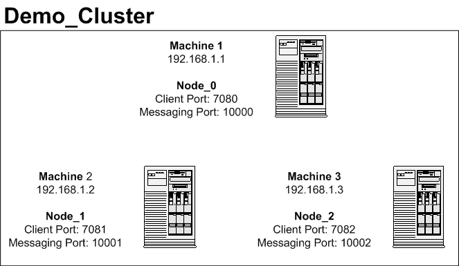

Arakoon Deployment
Below you find an example of an Arakoon configuration. The example is a three-node setup with one master node and two slave nodes. The shown clients can be PHP, OCaml, or Python clients.

An arakoon cluster consists of a small set of nodes that contain the full range of key-value pairs. Each node carries all the data, yet one node is assigned to be the master node.The master node manages all the updates for all the clients. Clients only talk to the master node, but may contact other nodes to discover who the master node is; they do so because nodes can assume different roles.
A node is a service that stores key-value pairs in its own local directory. In a typical setup you install one node per physical server, resulting in a distributed deployment.
Tip
For testing purposes it is possible to install multiple nodes on one server. Obviously this is not the recommended setup.
Directory Structure
The directory structure of a node typically looks like this:
machine1
└── mycluster
└── mycluster_0
├── 000.tlog
├── mycluster_0.db
└── mycluster_0.db.wal
machine2
└── mycluster
└── mycluster_1
├── 000.tlog
├── mycluster_1.db
└── mycluster_1.db.wal
machine3
└── mycluster
└── mycluster_2
├── 000.tlog
├── mycluster_2.db
└── mycluster_2.db.wal
These are the components:
- mycluster: the name of the cluster, its subdirectories form the cluster nodes
- mycluster_X: the name of a node in a cluster
- XXX.tlog: Incubaid's transaction log files, contains the logs for all transactions executed on the node
- mycluster_X.db: the actual key/value store
- mycluster_X.db.wal: security database to keep the key/value store consistent, for example in case of a failure
You define yourself where you store the directory structure in the Arakoon configuration file.
How Arakoon Works
An Arakoon client always looks up the master of a cluster and then sends a request to the master. The master node of a cluster has a queue of all client requests. The moment that a request is queued, the master node sends the request to all his slaves and writes the request in the Transaction Log (TLog). When the slaves receive a request, they store this also in their proper TLog and send an acknowledgement to the master.
A master awaits for the acknowledgements of the slaves. When he receives an acknowledgement of half the nodes plus one, the master pushes the key/value pair in its database. In a five node setup (one master and four slaves), the master must receive an acknowledgement of two slaves before he writes his data to the database, since he is also taken into account as node.
After having written his data in his database, the master starts the following request in his queue. When a slave receives this new request, the slaves first write the previous request in their proper database before handling the new request. This way a slave is always certain that the master has successfully written the data in his proper database.
Example Three Node Setup
Below you can find an example of a three node setup, consisting of three machines, each running one Arakoon node.
